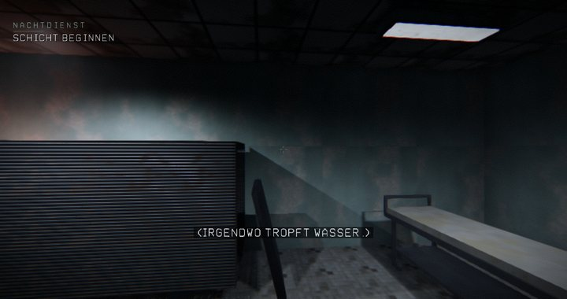
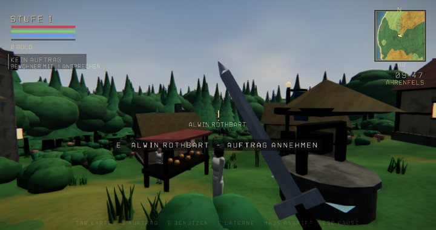
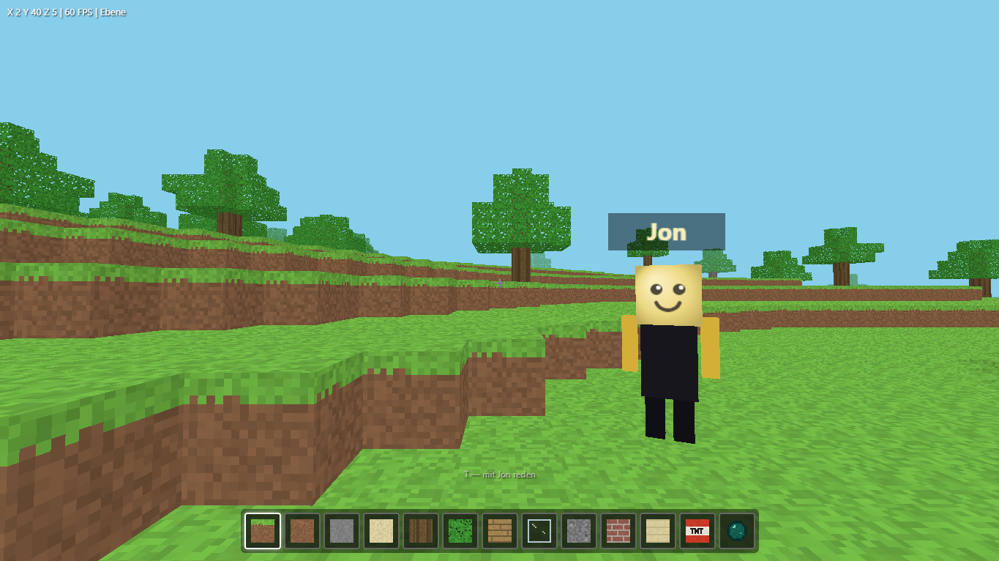
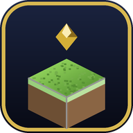

Jon steuert deinen gesamten Computer intelligent. Multi-Provider-KI mit GPT-OSS 120B über NVIDIA, Sprachsteuerung, Echtzeit-Streaming, Langzeitgedächtnis und voller Systemsteuerung — in einem eleganten Black-&-Gold-Design.
Nicht nur ein Chat — ein echter Assistent, der handelt. Neu in v3.33.0: Online-Multiplayer für alle drei Spiele — Freundschaftscode eingeben und zu zweit spielen. Dazu neue Jumpscares in ECHO und ein Wegweiser auf Tastendruck.
Jons kleiner Sohn Emil lebt als niedlicher Kreis auf deinem Bildschirm — immer da, beim Hochfahren schon wach. Sag „Emil" oder „Mini Jon", er hört durchgehend zu, redet mit dir (mit lippensynchronem Mund), merkt sich euer Gespräch und kann alles, was Jon kann. Auch fürs Handy verfügbar. Farben und Gesicht frei anpassbar.
Ein Coding-Agent wie in einem Editor: Dateibaum, Code-Editor und Jon, der ausschließlich im geöffneten Projektordner arbeitet. Sag „schreib mir in index.html ein Login-Formular" — der Code landet direkt in dieser Datei, modern gestaltet mit Liquid Glass statt grauem Standard.
„Mach mir eine Präsentation über den Klimawandel." Jon baut eine fertige .pptx mit Titelfolie, Karten, Kennzahlen, Zeitstrahl, Zitaten, Sprechernotizen und elf Farbwelten — und öffnet sie dir.
Ollama und LM Studio als lokale Modelle — ganz ohne API-Key und ohne Kosten. Plus Free-Tiers von NVIDIA, Gemini und Groq.
„Erinnere mich jeden Tag um 13 Uhr ans Trinken." Jon meldet sich mit Nachricht und Benachrichtigung.
Antworten Token für Token, inklusive sichtbarem Denkprozess — mit großem Antwortlimit.
Jon merkt sich Fakten über alle Unterhaltungen hinweg — lokal in SQLite.
PowerShell, CMD, Programme, Explorer, VS Code — plus Systeminfos, Prozesse und Bildschirm sperren.
Lesen, schreiben, suchen, kopieren, verschieben, löschen und ZIP packen/entpacken.
Jon fragt vor jeder Aktion um Erlaubnis. Jeder Befehl ist aufklappbar sichtbar — oder du erlaubst alles.
Jon bewegt die Maus, klickt und tippt selbst — er bedient Apps wie du.
Sag einfach „Jon" — er hört zu, führt aus und antwortet dir mit Stimme.
Bearbeitbare Anleitungen (Web-Design, PowerPoint, Spiele …) und ein eigenes System-Prompt — bring Jon deine Arbeitsweise bei.
OpenAI, Anthropic, Gemini, OpenRouter, Groq, xAI & mehr per API-Key. Jon erkennt alle Modelle automatisch.
Sieh real gemessene Tokens, Anfragen und Antwortzeiten pro Anbieter.
Die FelWorks Game Collection gehört dazu: ECHO (Horror), AETHERIA (Open-World-RPG) und die Blockwelt. Zu finden unter Werkzeuge → Spiele, gestartet wird erst auf Klick. Alle drei haben jetzt Online-Koop über Freundschaftscode.
Chatten, Apps öffnen, teilen, vorlesen, zuhören und Bilder analysieren — mit eigenem API-Key.
Der schnellste Weg: die fertige Jon-Setup.exe — App, Mini Jon und Backend inklusive, API-Keys trägst du direkt in der App ein. Für Entwickler geht es auch aus dem Quellcode:
Lege deinen NVIDIA-Key in die Datei .env:
NVIDIA_API_KEY=nvapi-...
DEFAULT_MODEL=openai/gpt-oss-120bcd backend && pip install -r requirements.txt && cd .. &&
cd frontend && npm installEin Doppelklick genügt:
start-jon.batDie installierbare Web-App: Chatte mit Jon von unterwegs — mit deinem eigenen API-Key, gespeichert nur auf deinem Gerät.
Öffne diese Website auf deinem Handy und tippe unten auf „Handy-App öffnen".
Im Browser-Menü „Zum Startbildschirm hinzufügen" wählen — Jon installiert sich wie eine echte App.
Tippe auf NVIDIA, GLM oder einen anderen Provider, füge deinen API-Key ein — fertig. Der Key bleibt lokal auf deinem Handy.
Unterwegs kann Jon Apps öffnen (WhatsApp, YouTube, Maps, Kamera …), über das Teilen-Menü teilen, Antworten vorlesen, dir per Spracheingabe zuhören und angehängte Bilder analysieren. Kontakte, Nachrichten und fremde Dateien bleiben aus Sicherheitsgründen tabu — dafür nutzt Jon die bestmögliche offizielle Alternative.
Lieber mit dem Kleinen reden? Mini Jon (Emil) gibt es jetzt auch fürs Handy — genauso klein und direkt wie am PC: antippen oder „Emil" sagen, er antwortet mit Stimme und merkt sich euer Gespräch.
Neu ab v3.31.0: Die FelWorks Game Collection ist Teil von Jon. Werkzeuge → Spiele → Starten — Jon bleibt dabei offen, nichts startet von allein.

First-Person-Horror in einem seit Jahren geschlossenen Krankenhaus: 4 Etagen, 464 Räume, eine Regie, die auf dein Verhalten reagiert, und fünf Enden. Neu: in jedem Flur wartet mindestens ein Jumpscare mit eigenem Kreaturen-Modell, H blendet den direkten Weg zum Ziel ein — und zu zweit im Koop.

Offene Fantasy-Welt mit sechs Dörfern, Bewohnern, Aufträgen, Stufenaufstieg, Tag- und Nachtwechsel und einer Weltkarte. Neu: Online-Koop über Freundschaftscode — zwei Reisende, eine Welt, gemeinsame Quests und ein geteilter Tag-Nacht-Zyklus.


BlockweltDie Voxel-Sandbox, in der Jon selbst mitspielt: Drück T und sag ihm, was er bauen soll — Häuser, Türme, Brücken, ein ganzes Dorf. Neu: „Online spielen“ öffnet eine Lobby, dein Freund tritt mit dem Code bei und ihr baut dieselbe Welt gemeinsam um.
Neu in v3.33.0: ECHO, AETHERIA und die Blockwelt haben einen echten Online-Koop — serverautoritativ, mit Freundschaftscode, Lobby, Ping-Anzeige und automatischem Reconnect. Der Server ist Jon selbst: er läuft schon, wenn du start-jon.bat oder die Jon.exe startest.
Ein Klick — der Server legt eine Lobby an und würfelt einen 6-stelligen Freundschaftscode.
Zum Beispiel AB39KD. Für Spiele über das Internet reicht AB39KD@meinserver.de — Code und Adresse in einem Feld.
Dein Freund gibt den Code ein, setzt sich auf „Bereit“, der Host startet — beide spawnen gleichzeitig in dieselbe Welt.
Im Heimnetz reicht die LAN-Adresse. Übers Internet: Portfreigabe für 8756 (Browser) und 8759 (ECHO/AETHERIA) — oder ein öffentlich erreichbarer Jon-Server, dann genügt der Code allein.
Positionen, Blöcke, Türen, Rätsel, Quests und der Spielstand werden serverseitig geprüft. Wer sich unmöglich bewegt, wird zurückgesetzt — Items lassen sich nicht herbeizaubern.
Delta-komprimierte Snapshots mit 20 Hz, Interpolation, Client-Prediction und Lag-Kompensation. Keine Teleports, kein Gummiband.
Heartbeat, Ping, Paketverlust-Anzeige und automatischer Reconnect. Deine Sitzung bleibt auf dem Server erhalten — auch wenn Jon neu startet.
Jeder bekommt eine eigene PlayerID, ein eigenes Modell und ein Namensschild mit Ping. Laufen, rennen, ducken, springen, fallen, angreifen — alles synchron.
Ein Blockwechsel, eine Tür, ein Hebel, ein gelöstes Rätsel, ein NPC-Gespräch: was einer tut, sieht der andere sofort. Auch Jons Bauaufträge in der Blockwelt.
Hi, ich bin Felix, ein leidenschaftlicher Softwareentwickler aus Österreich. Ich liebe es, Ideen in echte Projekte zu verwandeln und ständig neue Technologien zu entdecken. Egal ob moderne Webanwendungen, KI oder kreative Tools, ich probiere gerne Neues aus und entwickle Lösungen, die nicht nur funktionieren, sondern auch Spaß machen.
Im Mittelpunkt steht dabei Jon, mein KI-Assistent. Für dieses Projekt experimentiere ich mit künstlicher Intelligenz, lokalen Sprachmodellen, Smart-Home-Integration und moderner Softwareentwicklung. Jon ist für mich nicht nur ein spannendes Projekt, sondern auch eine Möglichkeit, neue Ideen auszuprobieren und mich als Entwickler weiterzuentwickeln.
Ich glaube daran, dass man nie ausgelernt hat. Deshalb verbringe ich viel Zeit damit, neue Programmiersprachen, Frameworks und Technologien auszuprobieren und mein Wissen in spannende Projekte einfließen zu lassen. Mein Ziel ist es, Software zu entwickeln, die nützlich, innovativ und einfach zu bedienen ist.
Jon App mit Mini Jon und Backend — komplett in einem Paket. Wähle, wie du Jon haben willst.
Die .exe installiert Jon mit Startmenü- und Desktop-Verknüpfung. Die ZIP entpackst du einfach in einen Ordner und startest Jon.exe — gleiche App, gleiche Funktionen, keine Installation nötig.